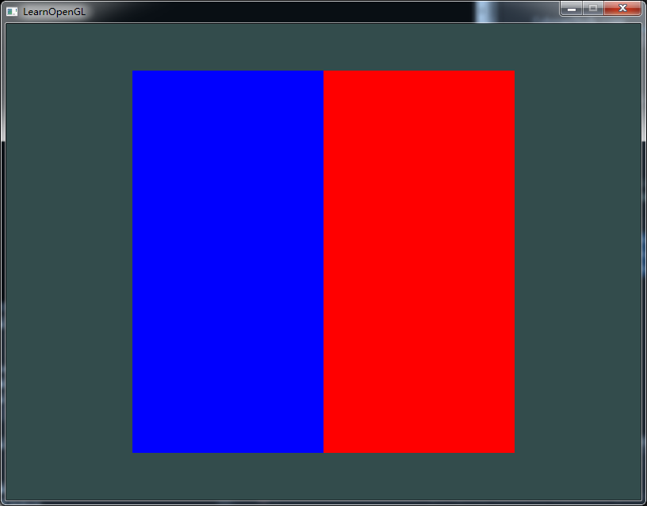
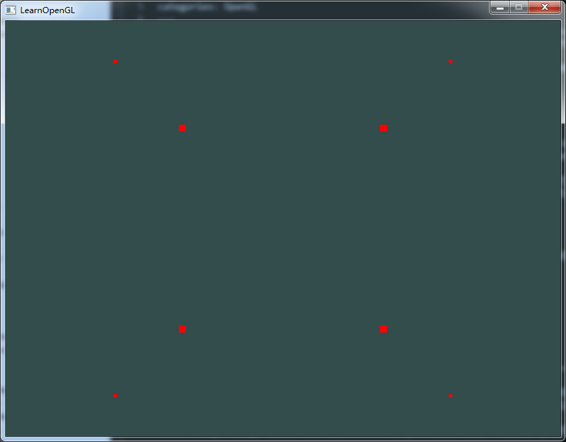

高级GLSL(1)
撰写于 2016-10-10 修改于 2016-10-11 分类 OpenGL
我们以前使用GLSL用法也很简单，使用的少量的GLSL内建变量(gl_Position，gl_FragCoord)，数据类型和数据的输入输出方式也很简单。下面会稍微深入了解一下GLSL的其他内建变量，数据类型，数据的输入输入输出方式。
GLSL内建变量
什么是内建变量？GLSL为各个着色阶段定义了一些特殊变量，这些内建变量有一些特殊属性。他们通常用来表达一些固定功能，通常，这些变量都以“gl_”开头。
我们已经用过一个输出内建变量 gl_Position 和一个输入内建变量 gl_FragCoord，简单的复习一下这两个内建变量。
out vec4 gl_Position
顶点着色器内建变量，官方文档：输出当前顶点在裁剪坐标系下的位置。
in vec4 gl_FragCoord
片段着色器内建变量，官方文档：当前片段在窗口坐标系下的位置。左下角为（0，0），右上角为（screenWith, screenHeight）。如果在这个着色阶段，gl_FragDepth没有被写入，那么z值将会写入到深度缓冲区中。gl_FragCoord的w分量是$\frac 1 w_c$。
gl_FragCoord有一个用处就是分屏显示，屏幕不同区域渲染的东西不同。示例：
运行效果图：

再介绍几个内建变量。gl_PointSize, gl_VertexID, gl_FrontFacing, gl_FragDepth
out float gl_PointSize
顶点着色器内建变量，官方文档：（输出）设置该点被光栅化后，像素的宽高值，它只有在渲染点图元(point primitives)时才有效。当然可以不在着色器中设置该值，可以使用glPointSize来设置点的大小。还需要注意的是，该功能在OpenGL中是默认关闭的，需要使用时，要打开，方式如下：
我们可以在顶点着色器中设置gl_PointSize，为gl_Position.z值，这样就会有距离摄像机越远，点越大
运行效果图如下：

in int gl_VertexID
官方文档：表示当前正在处理的顶点的索引。当我们使用非索引渲染时，它表示当前顶点的真实索引（已经被处理过的顶点的数量）。当使用索引渲染时，它是用来获取缓冲区顶点的索引。
教程中的说明更容易理解：当使用索引渲染时（即使用glDrawElements渲染时），这个变量保存着当前绘制的顶点的索引。当用的不是索引渲染时（即使用glDrawArrays渲染时），这个变量保存的是从渲染开始到当前处理的这个顶点的（当前顶点）编号。
in bool gl_FrontFacing
当前片段是正面的一部分，那么该变量是true，否则就是false。当然如果你开了面剔除（glEnable(GL_CULL_FACE)），那么反面的东西就没有任何东西，使用gl_FrontFacing就没有任何意义。
out float gl_FragDepth
设置片段的深度值。（暂时不是重点，不再详细描述）
参考教程：https://learnopengl-cn.github.io/
学习交流：我的OpenGL工程
VAO：怎么理解VAO呢，全称是顶点数组对象(Vertex Array Object)，绑定后，任何随后的设置顶点属性都会存贮在VAO中（glEnableVertexAttribArray、glDisableVertexAttribArray、glVertexAttribPointer），其实VAO中存储的一系列绑定的VBO的起始位置，跨度，数据长度等属性信息，当渲染时，OpenGL会用vertex shader中layout的值，找到当前绑定的VAO中对应layout的属性信息，然后进一步找到VBO中顶点信息，传递给vertex shader。